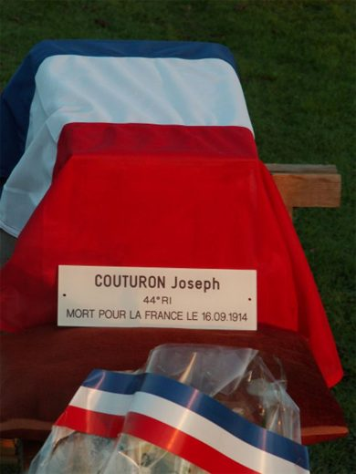

Plus de quatre-vingts ans après les combats de 1914, la terre d'Autrêches a rendu les corps de deux soldats français tombés en septembre 1914. L'un est resté anonyme, l'autre, Joseph Couturon, a pu retrouver son nom grâce à une simple plaque d'identité.
Première partie : le soldat inconnu du chemin creux
Une découverte fortuite
Tout commence par un hasard. Un habitant des environs organisait une réunion entre amis en pleine nature. Constatant que le chemin creux qui menait au lieu de rendez-vous était devenu difficilement praticable, il décida de reboucher une ornière avec la terre du talus voisin. Dès le premier coup de pelle, il mit au jour des ossements humains.
Ce premier corps fut exhumé en toute discrétion par l'administration chargée des sépultures militaires.
Un second soldat
Informés de cette découverte, trois membres de l'association « Soissonnais 14-18 » se rendirent sur place. Ils remarquèrent très vite un fragment d'os qui dépassait du talus, tout près de l'endroit où le premier corps avait été trouvé. Quelques légers dégagements suffirent : c'était le sommet d'un crâne. Ils prévinrent aussitôt la gendarmerie et le maire.
Le lendemain, avec l'accord des gendarmes, l'exhumation put commencer. Menée avec méthode et minutie, elle demanda une journée entière.
Hélas, malgré tous les soins apportés, rien ne permit d'identifier le soldat. Les objets retrouvés autour de lui (étuis Lebel, crochets, bidon, boutons…) montraient du moins qu'il était français.
Le 20 septembre 1914
La connaissance précise que l'association avait des combats locaux permit de dater sa mort et de retrouver son unité avec une quasi-certitude : il appartenait à la 5e compagnie du IIe bataillon du 35e régiment d'infanterie et avait été tué le 20 septembre 1914.
Ce jour-là, avant l'aube, les Allemands, retranchés depuis le 14 septembre sur le plateau au sud de Vassens, lancèrent une attaque massive. Sous la violence du choc, toutes les unités françaises qui leur faisaient face reculèrent, soit en se battant avec courage, soit parce qu'elles avaient été retirées du champ de bataille selon les ordres jugés aberrants du colonel de Mac Mahon, qui commandait le 35e R.I.
Protégé par un barrage d'artillerie très efficace, le IIe bataillon fut le dernier à être attaqué. Mais sa position était devenue périlleuse, car les unités voisines, à gauche comme à droite, avaient dû se replier. Une partie du bataillon, en particulier la 5e compagnie, installée dans le chemin creux où le corps a été retrouvé, s'accrocha avec l'énergie du désespoir au bord du plateau. Elle barrait ainsi l'accès au ravin qui descend vers le hameau de Chevillecourt. Cette résistance permit au gros du bataillon de se regrouper en contrebas et de tenter plusieurs percées pour rejoindre les lignes françaises. Toutes échouèrent. Isolé et épuisé, le bataillon se rendit à une vingtaine d'Allemands, stupéfaits de faire à eux seuls 400 à 500 prisonniers (d'après l'historique du I.R. 85).
Le sacrifice de ceux qui avaient défendu le plateau jusqu'au bout avait donc été vain. Les corps des soldats morts jonchaient le sol. Les Allemands restèrent maîtres des lieux jusqu'en mars 1917 : c'est à eux que revint la tâche d'enterrer les morts.
Le témoignage d'un soldat allemand
Un article d'A. Matthiessen, paru dans le n° 18 du « Frontsoldat » et traduit par les auteurs, décrit cette besogne :
Nous étions à nouveau dimanche, la 3e section de la compagnie forma un détachement pour inhumer les corps qui se trouvaient à Autrêches et dans les environs où se trouvaient les chemins creux. Nous trouvâmes des corps de soldats tués lors des combats du 20 septembre et auparavant. Les odeurs furent vite insupportables et l'on dut emporter de l'alcool avec soi. Nous déboutonnâmes les tuniques, prîmes les médailles et autres objets personnels afin d'identifier les corps avec certitude. De la même manière, le chef de section prit les papiers que l'on trouva et les carnets de route. Nous ne pûmes nous débarrasser de l'odeur de mort de toute la journée. Les corps eurent pour dernière demeure une tombe fraîche et une croix de bois avec un écriteau caractéristique.
Ce récit explique pourquoi aucun effet personnel n'a été trouvé sur le corps. Il rend aussi compte de la double fracture du fémur gauche, probablement survenue après la mort, lors d'une inhumation faite sans ménagement.
Un dernier hommage
C'est avec beaucoup d'émotion que les restes du poilu furent placés dans un cercueil acquis pour l'occasion. Sa dépouille fut conduite dans la crypte de l'église d'Autrêches, où elle reçut une bénédiction.
L'association « Soissonnais 14-18 » prit contact avec le Souvenir français, les anciens combattants et les autorités militaires, puis associa la municipalité à une prise d'armes. Le 35e régiment d'infanterie, toujours cantonné à Belfort, tint à y participer et envoya deux représentants.
Le corps fut enfin inhumé dans la nécropole nationale de Tracy-le-Mont, dans une tombe individuelle voulue par l'association. Il repose sous la terre du Soissonnais, mêlée à de la terre venue de sa région natale. Ainsi, le soldat inconnu a reçu, dans le plus grand respect, l'hommage qui lui était dû.
Seconde partie : un autre poilu, Joseph Couturon
Une plaque d'identité
Disparu depuis le 16 septembre 1914, un autre poilu a été retrouvé le 27 mai 2006. Ce jour-là, dans l'après-midi, des chasseurs qui aménageaient une parcelle destinée à nourrir le gibier ont fait remonter des ossements avec une herse. L'un d'eux, M. Légierski, sachant que l'un des membres de l'association « Soissonnais 14-18 » s'intéressait à ces questions, est allé le prévenir.
Sur place, parmi les ossements épars, il n'y avait que trois éléments : un bouton d'aluminium d'équipement militaire, un crochet de chaîne de montre et une plaque d'identité.
Une fois délicatement nettoyée, la plaque a livré ses secrets. Sur une face apparut d'abord le nom d'une ville, Tulle, puis un numéro, 1678. Sur l'autre face, très abîmée, la dernière ligne laissait deviner « 1913 », l'année des 20 ans du soldat. Au-dessus se lisait un prénom, Joseph, puis, lettre après lettre, un nom : Couturon. Il s'agissait donc de Joseph Couturon, classe 1913, n° 1678 du recrutement de Tulle.
Grâce à Internet, la base de données « Mémoire des hommes » du ministère de la Défense permit de poursuivre l'enquête. Sa rubrique « Première Guerre mondiale » donne accès aux fiches de tous les militaires français morts pour la France pendant le conflit. La fiche s'afficha bientôt : « soldat Couturon Joseph René, du 44e régiment d'infanterie, de la classe 1913, du recrutement de Tulle, mort pour la France le 16 septembre 1914, au combat d'Autrêches (Oise). Tué à l'ennemi. Né le 3 septembre 1893 à Salon-la-Tour, département de la Corrèze. »
Tout concordait. Un jeune homme de 21 ans à peine, né treize jours seulement avant sa mort, sortait de l'anonymat du champ de bataille et retrouvait son identité.
Le parcours de Joseph Couturon
Appelé de la classe 1913, Joseph Couturon fut incorporé au 44e R.I. le 20 novembre 1913 et mobilisé dans cette unité le 2 août 1914. Le 44e R.I. formait, avec les 60e, 35e et 42e R.I., la 14e division d'infanterie. Joseph fut de tous les combats : l'Alsace, la Marne, l'Ourcq, puis la poursuite des troupes allemandes sur la rive nord de l'Aisne.
Le 16 septembre 1914, le 44e R.I., en première ligne, reçut l'ordre d'attaquer depuis les hauteurs d'Autrêches en direction d'Audignicourt. Il perdit près de 600 hommes en moins d'une heure, mais se maintint sur les positions conquises.
Le lendemain, un brancardier du 44e écrivait à ses parents :
Hier soir, le pays était bombardé avec acharnement autour de l'église et du poste de secours, c'était une vraie pluie de fer et un vacarme que vous ne pouvez guère concevoir. Nous avons eu tellement de travail que nous n'avons pas mangé dans la journée et très peu dormi cette nuit. Heureusement, parmi ceux qui sont tombés, il y a peu de blessures graves et beaucoup moins encore de tués.
Le 20 septembre, les Allemands contre-attaquèrent et s'emparèrent d'Autrêches, qu'ils gardèrent près de trois ans. La sépulture de Joseph fut alors oubliée, jusqu'à ce jour de mai 2006.
On notera au passage que le premier mort de la guerre, le caporal Peugeot, appartenait au même régiment que Joseph Couturon.
Une sépulture enfin digne
Après plusieurs jours de recherches infructueuses pour retrouver sa famille, puis l'attente des autorisations administratives, Joseph Couturon a été inhumé dans la nécropole de Tracy-le-Mont. Il y a enfin la sépulture qu'il attendait depuis 92 ans.
La cérémonie a eu lieu le 7 novembre 2006 à 17 heures, quelques jours avant la commémoration de l'armistice. Des militaires du 44e R.I., aujourd'hui basé à Orléans, sont venus lui remettre symboliquement la fourragère du régiment. Ce fut le dernier hommage de sa famille militaire à ce jeune soldat tombé au champ d'honneur, comme tant de ses camarades, durant la guerre la plus meurtrière du XXe siècle.

Textes de R. Hebert et H. Vatel, membres de l'association « Soissonnais 14-18 »
Album photo : l'inhumation de Joseph Couturon Le 20 septembre 1914 : la bataille d'Autrêches